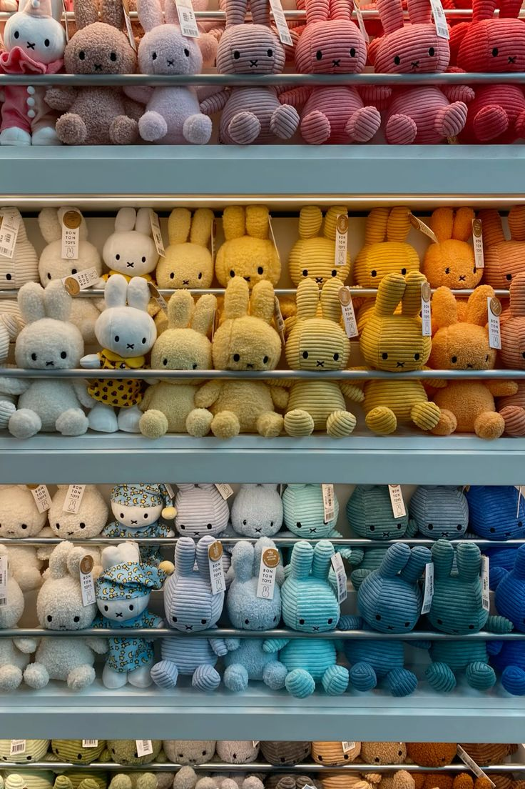
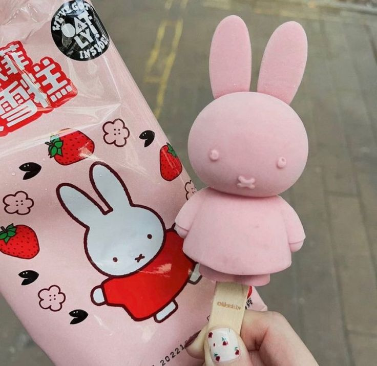
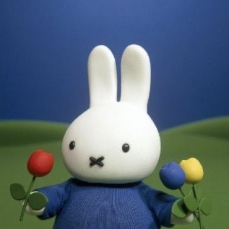
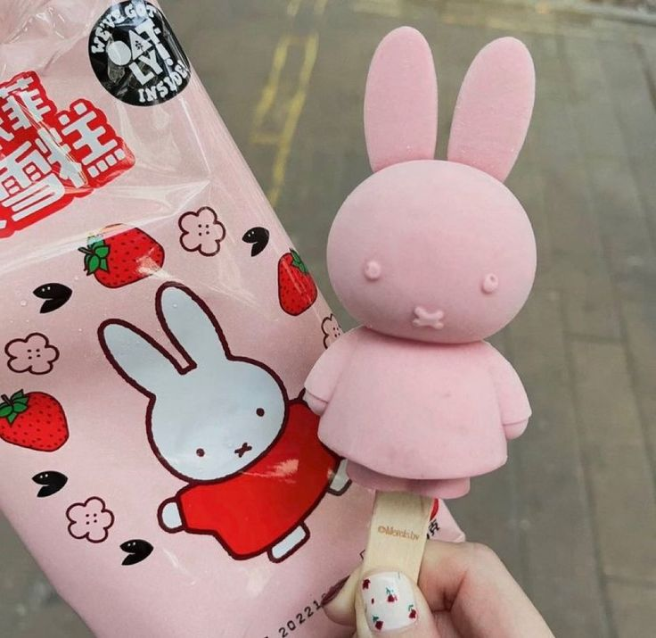
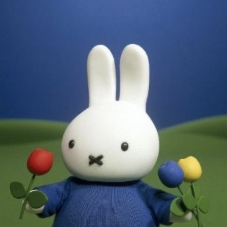

Pourquoi Miffy?
Le lapin des enfances de plusieurs
Miffy était présent lors de mon enfance, ce qui a établi une connexion précoce. Maintenant que je suis presque adulte, mes goûts ne ont pas tant changés, j'ai toujours aimé des personnages mignons, incluant Miffy. J'aime beaucoup les palettes de couleurs utilisées à travers les biens et émissions de télévision de Miffy. Le thème de couleurs diverses en combinaison avec les personnages adorables donne une allure confortable.

Je ne sais pas trop comment l'expliquer mais ce petit lapin me rapporte beaucoup de joie. Un de mes rêves est de visiter tous les cafés qui abordent le thème de Miffy et déguster les pâtisseries et boissons qui s'y trouvent. Je suis aussi très intéressée par les biens différents qui sont vendus là-bas, comme les accessoires, les appareils électroménagers et les sacoches.


 


